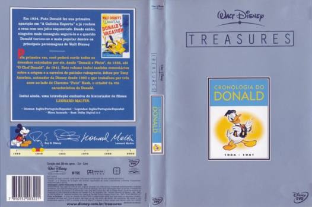

Walt Disney Treasures - Cronologia do Donald (2004)

1934 - 1941

Outro Título:Walt Disney Treasures - The Chronological Donald
País:United States, 275 minutos
Idiomas falados:Espanhol, Inglês, Português
Gênero(s):Animação, Família
Diretor(s):
Escritor(es):
Codec:MPEG-2 (DVD)
Número: 5694
Tomatometer Score:

--

--
Avaliação (IMDb):


8.3/10 (91 votos)
Avaliação (Usuário):
Certificado:
Sinopse:
Em 1934, Pato Donald fez sua primeira aparição em "A Galinha Sábia" e já roubou a cena com seu jeito esquentado e impaciente. Agora, pela primeira vez, você poderá curtir todos os filmes animados e desenhos estrelados por ele, desde Donald e Pluto...
Elenco:
Tipo de mídia: DVD5,
Legendas: Espanhol, Inglês, Português, Sem Legendas
Alugado: Não
Tela: Anamorphic Widescreen